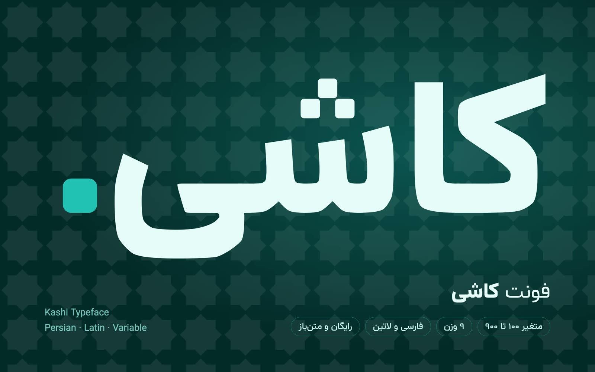
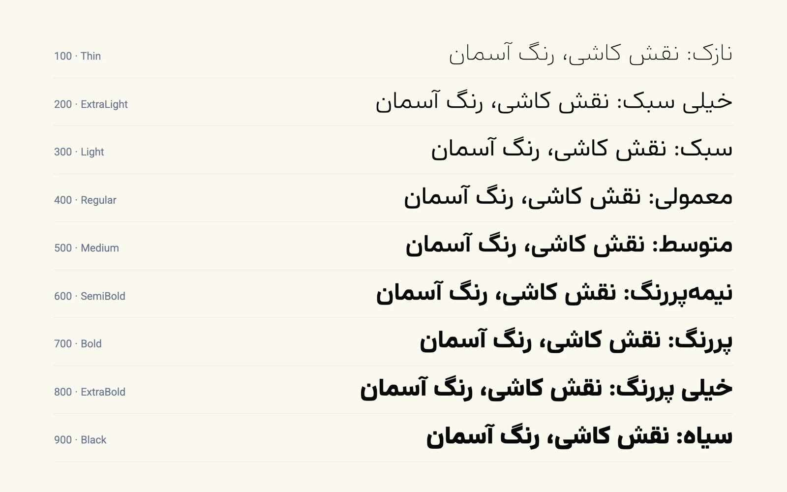
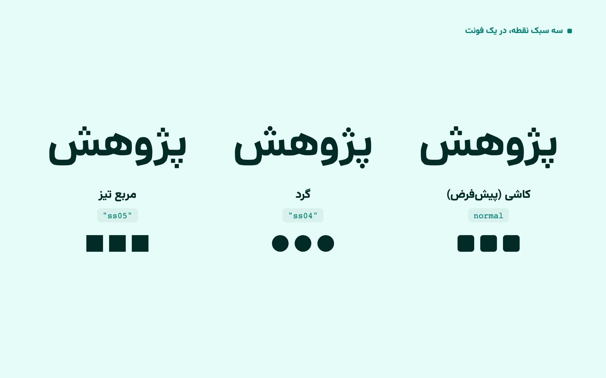
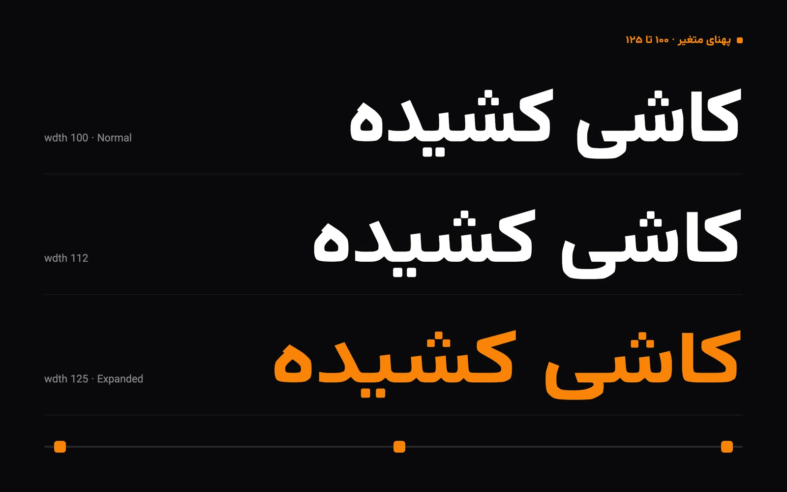

Kashi (کاشی, “tile”) is a Persian and Latin typeface made for product interfaces: buttons, forms, tables, dashboards and long Persian text on screens. It is the typeface of the open-source Kashi design system. The idea comes from Persian tile work, where simple pieces, set in a calm order, make a living wall.

The Persian letters are geometric and open, with squared, quiet curves and shorter ascenders that sit well next to Latin. Kashi is a variable font on two axes: weight from 100 to 900, and width from 100 to 125, from normal to expanded, for headlines that need more room.

Its dots are soft square tiles. Two stylistic sets change them in every dotted letter: round dots (ss04) and sharp square dots (ss05). Tabular figures (tnum) share one compact cell for tables, and ss02 and ss03 turn the typed words for toman and rial into currency signs.

Kashi is derived from Dastkhat by Dastyar, which is derived from Vazirmatn by Saber Rastikerdar. To contribute, see github.com/Sepantapouya/Kashi.